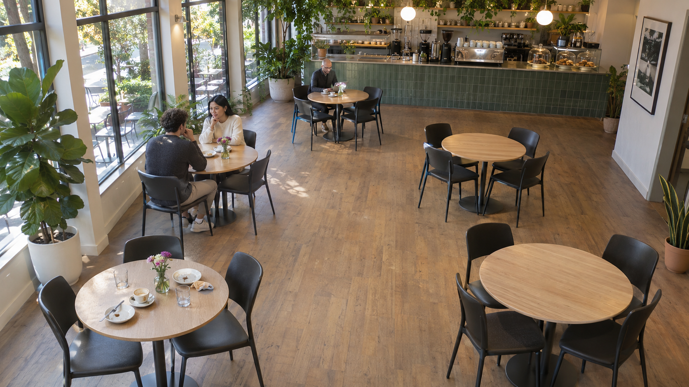

Ready for guests ↗
0Clean tables, ready to seat Restaurant server
A LITTLE CLARITY, EVERY SHIFT
Your floor, at a glance.
Know what’s ready. See what needs a little attention.
Camera offline
Connect a source to start monitoring.
Last successful AI check: Never0 uncertain · 0 cleaning
Occupied ◉
040% of your floor Needs cleaning ✧
0One small task. A fresh start.KEEP THINGS MOVING Average cleaning wait ◷
0:00Time since flagged for cleaningAcross the current cleaning queueCamera 01 · Café floor
Generated sample still · simulated table states

0:000:00
Connecting to CCTV…
5 tables mappedDemo simulation · AI is off
Floor plan
The room, without the guesswork.
↑ ENTRANCE
Ready Occupied Needs cleaning⚠ Uncertain◷ Cleaning
Cleaning tasks 1
Start with the oldest waiting table.
✧
A clean table is the start
of someone’s favorite visit.
✳ What the system sees
Simulated observations, clearly labeled.
THE SHIFT SO FAR
Every little change.
Table transitions and staff actions from this session.
Activity log
THIS SESSION · EXPORT BEFORE CLOSINGMAKE IT YOURS
A better fit for your floor.
Adjust monitoring preferences for this browser.
Monitoring preferences
Changes save automatically in this browser.
No custom audio uploaded.
Preview works even when alerts are off. Custom audio stays in this browser. Maximum 5 MB and 10 seconds.
After reopening the app, use Preview sound once to allow audio. Keep this tab open for alerts.
State changes require two consecutive confident observations. Results older than 30 seconds (or three scan intervals) become unscanned. Preferences, dining areas, and table regions are saved in this browser; frames and activity are not saved. Export the activity log before closing the page. Staff cleaning actions last for this session.
AI setup and troubleshooting
Enable local AI
In the project folder, run ./setup-ai.sh, then start with .venv/bin/python server.py. Setup downloads YOLO11s for table detection and d1-2B for table condition. After setup, inference runs offline.
On CPU, scans may take considerably longer than the selected interval. The next scan waits for the previous one to finish.
Model documentation ↗